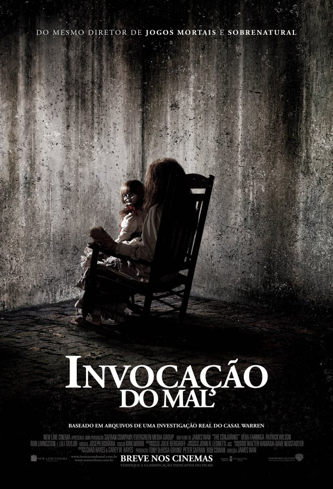
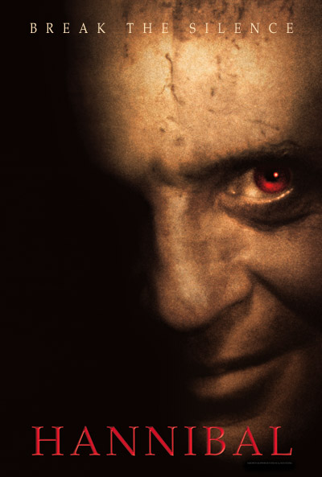
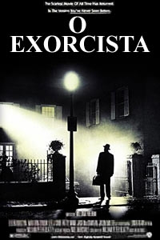

Sucessos de Bilheteria
Invocação do Mal
Os investigadores paranormais Ed e Lorraine Warren trabalham para ajudar a família aterrorizada por uma entidade demoníaca em sua fazenda.
Clique Aqui Para Assistir (YouTube)Clique Aqui Para Assistir (TeleCine)
Saiba Mais
Sucessos de Bilheteria
Hannibal
Sete anos se passaram desde que Dr. Hannibal Lecter escapou da prisão. O brilhante mas perigosíssimo psiquiatra agora está solto pela Europa. Mason Verger se lembra bem do seu contato com Dr. Lecter, pois foi sua sexta vítima. Embora horrivelmente desfigurado, sobreviveu, e agora busca vingança. Verger percebe que, para encontrar Lecter, precisa despertar o interesse dele com uma isca: a agente do FBI Clarice Starling.
Clique Aqui Para Assistir (YouTube)Saiba Mais
Sucessos de Bilheteria
A Freira

Presa em um convento na Romênia, uma freira comete suicídio. Para investigar o caso, o Vaticano envia um padre assombrado e uma noviça prestes a se tornar freira. Arriscando suas vidas, a fé e até suas almas, os dois descobrem um segredo profano e se confrontam com uma força do mal que toma a forma de uma freira demoníaca e transforma o convento em um campo de batalha.
Clique Aqui Para Assistir (YouTube)Saiba Mais
Sucessos de Bilheteria
O Exorcista
Uma atriz vai gradativamente tomando consciência de que a sua filha de doze anos está tendo um comportamento completamente assustador. Deste modo, ela pede ajuda a um padre, que também é um psiquiatra, e este chega a conclusão de que a garota está possuída pelo demônio. Ele solicita então a ajuda de um segundo sacerdote, especialista em exorcismo, para tentar livrar a menina desta terrível possessão.
Saiba Mais